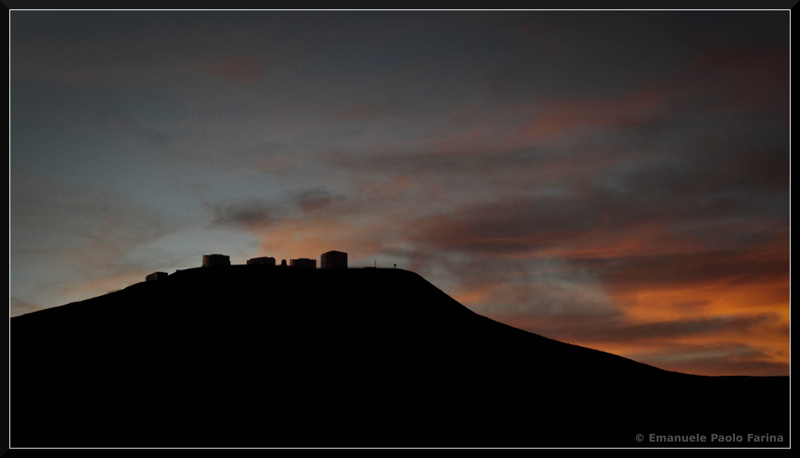
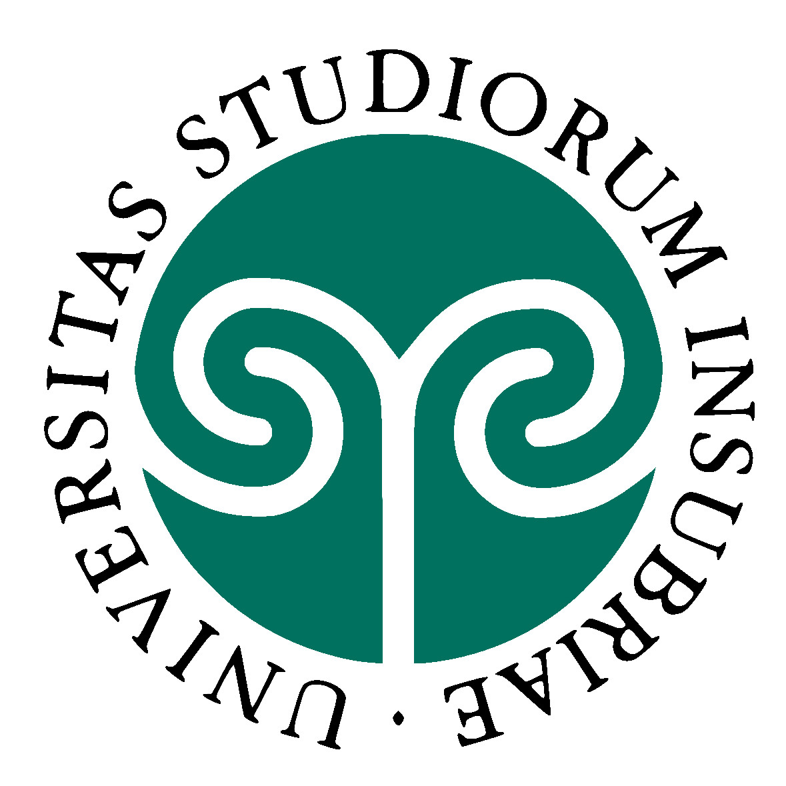
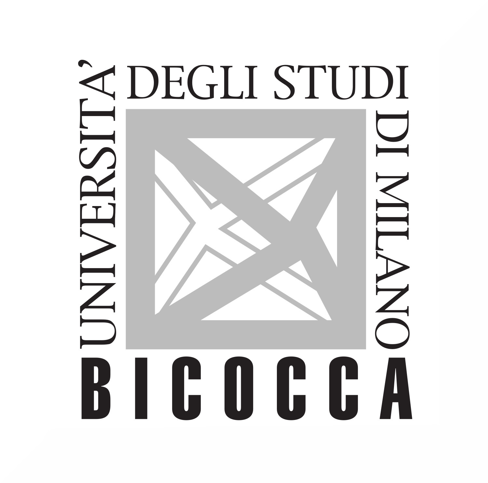

In Summary
I am an observational astronomer, and since October 2021 I have been an associate scientist at Gemini Observatory. Previously, I was an Archive Science Engineer in ESO's Archive Science group (outsourced from Terma GmbH). I have also been a visitor at the Max-Planck-Institut für Astrophysik in Garching bei München, and a postdoctoral researcher at the University of California in Santa Barbara and at the Max-Planck-Institut für Astronomie in Heidelberg. I did my PhD at the Università degli Studi dell'Insubria and my undergraduate studies at the Università degli Studi di Milano-Bicocca (including a few months at the Universität Zürich).
My research focuses mainly on quasars and blazars, from the local Universe up to the end of the cosmic dark ages at z≈7. In particular, I am interested in their clustering properties and in their circum-galactic medium.
I am an instrument scientist for GNIRS at Gemini, and I took part in the commissioning of the GNIRS IFUs and of IGRINS-2.

Career
Oct. 2021 → Present
Associate Scientist at Gemini Observatory [Hilo, Hawai'i, USA].
Oct. 2020 → July 2021
Archive Science Engineer in the Archive Science group at the European Southern Observatory
(outsourced from Terma GmbH) [Garching bei München, Germany].
Jan. 2020 → Sept. 2020
Archive Science Engineer in the Archive Science and Operations groups at the European Southern Observatory
(outsourced from Terma GmbH) [Garching bei München, Germany].
Jan. 2019 → Sept. 2021
Visitor at the Max-Planck-Institut für Astrophysik [Garching bei München, Germany].
Jan. 2019 → June 2019
Temporary Researcher at the Max-Planck-Institut für Astronomie [Heidelberg, Germany]
in the group of Fabian Walter.
Dec. 2017 → Dec. 2018
Postdoctoral Fellow at the University of California, Santa Barbara [Santa Barbara, USA]
in the ENIGMA group led by Joe Hennawi.
Sept. 2013 → Nov. 2017
Postdoctoral Fellow at the Max-Planck-Institut für Astronomie [Heidelberg, Germany]
in the group of Fabian Walter.
Nov. 2012 → Aug. 2013
Temporary Research Fellow in Astronomy and Astrophysics at the Università degli Studi dell'Insubria
[Como, Italy] in the group of Aldo Treves.
Academic History

Ph.D.
Università degli Studi dell'Insubria
2012 — Dottorato di Ricerca (Ph.D. equivalent) in Astronomy & Astrophysics at the
Università degli Studi dell'Insubria [Como, Italy]
under the supervision of Aldo Treves.
Thesis title: Physical and Projected Pairs of Quasars.

M.Sc.
Università degli Studi di Milano-Bicocca
2009 — Laurea Specialistica (M.Sc. equivalent) at the Università degli Studi di Milano-Bicocca
and at the Universität Zürich under the supervision of
Monica Colpi, Peppo Gavazzi, and Lea Giordano.
Thesis title: Globular Cluster Systems in Virgo Cluster's Dwarf Galaxies.
B.Sc.
Università degli Studi di Milano-Bicocca
2006 — Laurea Triennale (B.Sc. equivalent) at the Università degli Studi di Milano-Bicocca
under the supervision of Monica Colpi and Bernadetta Devecchi.
Thesis title: Gravitational encounters of BH binaries in globular clusters.